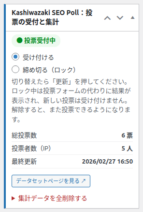
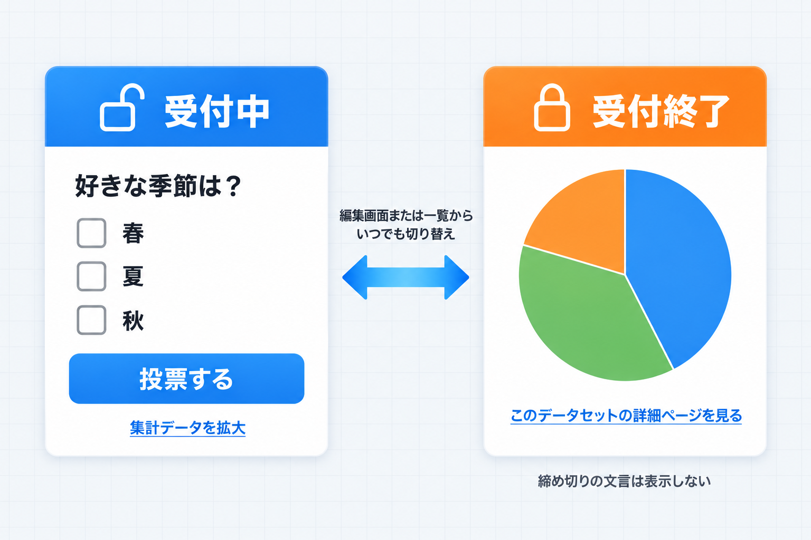
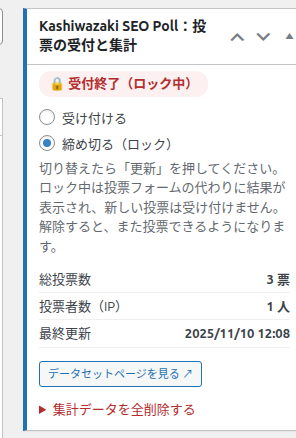
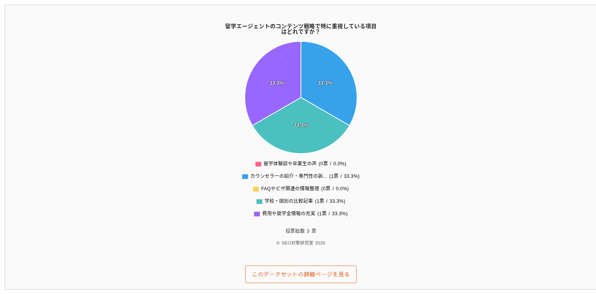
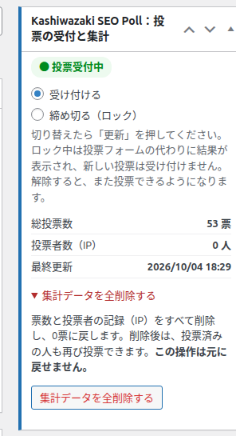
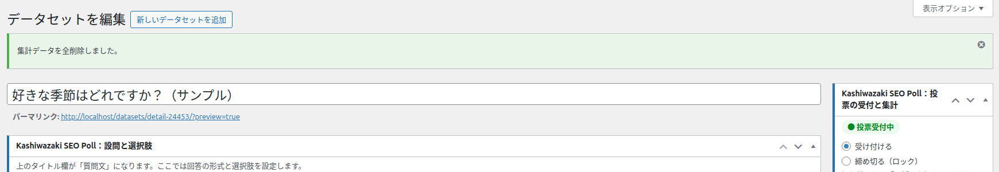

投票の受付と締め切り
編集画面の右列いちばん上にある「投票の受付と集計」ボックスでは、投票の受付を締め切る（ロックする）・再開する操作と、集計状況の確認、集計データの全削除ができます。締め切っている間、記事にはグラフと詳細ページへのリンクだけが表示されます。

画面の地図
| 番号 | 表示 | 内容 |
|---|---|---|
| 1 | 状態バッジ | 「● 投票受付中」（緑）または「🔒 受付終了（ロック中）」。保存済みの状態を表します |
| 2 | 受け付ける／締め切る（ロック） | 受付の切り替え。選んだ後に「更新」を押すと反映されます |
| 3 | 説明 | 「切り替えたら「更新」を押してください。ロック中は投票フォームの代わりに結果が表示され、新しい投票は受け付けません。解除すると、また投票できるようになります。」 |
| 4 | 総投票数 | 全選択肢の合計（例: 6 票） |
| 5 | 投票者数（IP） | 投票した接続元（IP アドレス）の数（例: 5 人） |
| 6 | 最終更新 | 最後に投票があった日時と、投票数を手で直した日時の新しい方。無ければ「—」 |
| 7 | データセットページを見る ↗ | 公開中のときだけ表示。詳細ページを新しいタブで開きます |
| 8 | 集計データを全削除する（折りたたみ） | 開くと説明と削除ボタンが表示されます |
受付を締め切る・再開する

編集画面から切り替える
「締め切る（ロック）」を選びます（再開するときは「受け付ける」）。
「公開」ボックスの「更新」を押します。
状態バッジが「🔒 受付終了（ロック中）」に変われば完了です。

切り替えたときのメッセージ
状態が変わると、画面上部に「投票の受付を締め切りました（ロック）。」または「投票の受付を再開しました。」と表示されます。ラジオを選んだだけで「更新」を押さなければ、状態は変わりません。
一覧画面から切り替える
データセット一覧で、タイトルにマウスを載せて「受付を締め切る」または「受付を再開」を押すと、その場で切り替わります（データセット一覧）。確認のダイアログは出ません。
締め切っている間に起きること
| 場所 | 受付中 | 受付終了（ロック中） |
|---|---|---|
| 記事の投票フォーム | 設問・選択肢・「投票する」・「集計データを拡大」 | 円グラフと「このデータセットの詳細ページを見る」だけ（設問の見出し、フォーム、締め切りの文言、ダウンロードのボタンは表示しません） |
| 新しい投票 | 受け付ける | 受け付けない |
| 締め切る前に開かれていた記事から投票した場合 | — | メッセージは出さずに、グラフと詳細ページへのリンクだけの表示に切り替わります。票は増えません |
| データセットページ | 表示される | 表示される（形式別ページの「投票ページ」は「受付終了（結果を見る）」になります） |
| 一覧画面の「受付」列 | 受付中 | 🔒 締切 |
| 票・投票した記録 | 変わりません。再開すると、まだ投票していない人は投票でき、投票済みの人は引き続き投票できません | |

おすすめの使い方
アンケートの期間が終わったら締め切ると、結果を見せながら追加の票が入らない状態にできます。投票数を手で直す前に締め切っておくと、作業中に票が動きません。
集計の見方
| 項目 | 数え方 | 注意点 |
|---|---|---|
| 総投票数 | いまの選択肢それぞれの票数の合計 | 複数選択では延べ票数のため、投票者数より多くなります |
| 投票者数（IP） | 投票した接続元（IP アドレス）の数 | 同じ接続元からの投票は1人と数えます。基本設定の「全データセットの投票制限を解除」をしても減りません。投票数を手で直しても変わりません |
| 最終更新 | 最後の投票の日時と、投票数を手で直した日時の新しい方（年/月/日 時:分） | サイトのタイムゾーンで表示します |
集計データを全削除する
このデータセットの票と投票した記録をすべて消し、0票の状態に戻します。テスト投票をやり直すときなどに使います。

画面の説明: 「票数と投票者の記録（IP）をすべて削除し、0票に戻します。削除後は、投票済みの人も再び投票できます。この操作は元に戻せません。」
「集計データを全削除する」の折りたたみを開きます。
赤い「集計データを全削除する」ボタンを押します。
確認のダイアログ「本当にこの集計データをすべて削除してもよろしいですか？ この操作は元に戻せません。」が出ます。「OK」で削除、「キャンセル」で何もしません。
画面上部に「集計データを全削除しました。」と出れば完了です。

削除すると起きること
- すべての選択肢の票が0になり、投票した接続元の記録も消えます。
- このデータセットに以前投票した人も、再び投票できるようになります。
- 「最終更新」は「—」に戻ります。
- 公開中なら、データファイル（CSV など）を0票の内容で作り直し、サイトマップも更新します。
- 選択肢・設問・データセット情報・受付の状態は消えません。
元に戻せません／ほかの入力も保存されます
削除した票は復元できません。必要ならデータセットページから CSV を先にダウンロードしてください。また、削除ボタンを押すと、そのとき画面で入力中のタイトル・選択肢・受付の状態なども一緒に保存されます（「投票数」欄の書き換えは無視されます）。下書きは下書きのままです。
この画面で出るメッセージ
| メッセージ | 種類 | 意味と対処 |
|---|---|---|
| 本当にこの集計データをすべて削除してもよろしいですか？ この操作は元に戻せません。 | 確認 | 削除してよければ「OK」 |
| 集計データを全削除しました。 | 成功 | 不要 |
| 集計データの削除に失敗しました。ページを再読み込みしてやり直してください。 | エラー | 画面を長く開いていたなどで確認が通りませんでした。再読み込みしてやり直してください |
| 集計データを削除する権限がありません。 | エラー | このデータセットを編集できる人に依頼してください |
| 他の処理（投票など）と重なったため、集計データは削除しませんでした。少し待ってから、もう一度お試しください。 | エラー | 投票などと同時だったため削除を見送りました。少し待ってからやり直してください |
| 集計データを削除できませんでした。集計データは元のままです。もう一度お試しください。 | エラー | データベースでの削除に失敗したため、元に戻しました。やり直してください |
| 集計データの削除中にエラーが発生しました。 | エラー | 通常の操作では出ません。再読み込みしてやり直してください |
よくある使い方
締め切った後、結果だけを見せ続けたい
締め切ったままにしておけば、記事にはグラフと詳細ページへのリンクが表示され続けます。データセットページとダウンロードも引き続き利用できます。
本番の告知前にテスト投票したので消したい
「集計データを全削除する」を使います。投票数を0に書き換えるだけでは、テストで投票した自分のブラウザ・回線から再び投票できないためです。